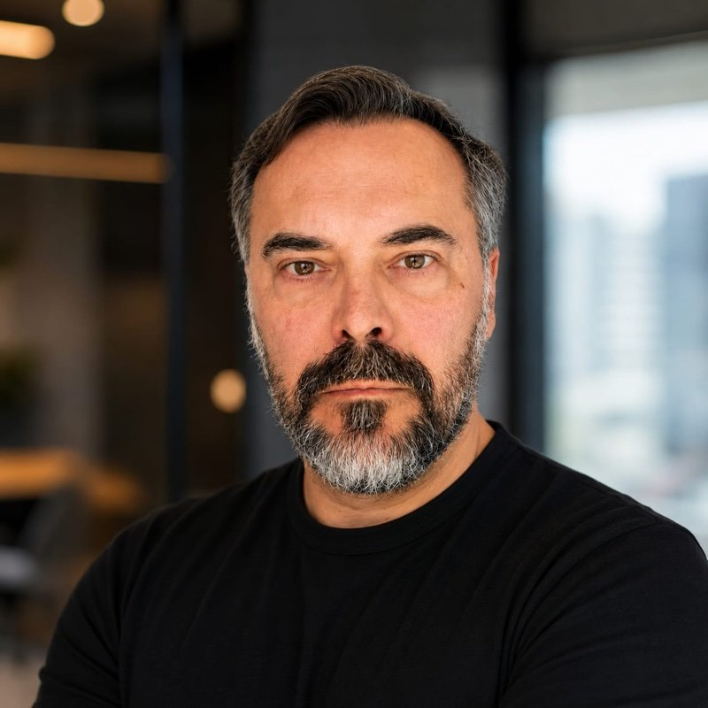

Founder, AgentNeo · Creator of Copernicus Argentina and GEOFUEGO · Open data with DOI · Private pilot (PPL)
I build production AI agents and satellite-data products for environmental monitoring and risk. The methods, the data and the safety layer behind them are published in the open.
Previously: 25 years of engineering and production-support roles for Fortune 100 systems at JPMorgan, Citi, Avaya, CA Technologies and Verizon Business.
Copernicus Argentina
Satellite Earth observation of the territory: water, rivers, land, fire and heat, measured from space for governments, companies and gated communities. Live river levels at 45 gauges, storm-surge alerts for the Río de la Plata, nationwide fire hotspots.
🏆 1st Prize — CarpinchIA 2026 · Universidad Nacional del DeltaGEOFUEGO
Argentina's wildfire map: satellite hotspots every 3 hours and the GeoFuego Index (GFI), a seasonal fire-risk indicator with a published, DOI-registered method.
AgentNeo
The studio: AI agents taken all the way to production (Your Best Employee, SENT, Luz Vera), NEO Portable as the model-agnostic runtime, and Agent Audit Gate as the open-source safety layer.
Independent research in applied remote sensing and risk modelling. Everything below can be cited, reproduced and audited.
ORCID 0009-0007-4270-1963 · huggingface.co/copernicus-argentina
Founder · AgentNeo
Applied remote sensing, environmental monitoring, AI agents in production. Creator of Copernicus Argentina and GEOFUEGO.
Senior Support Engineer, AIOps & Production · Forte Group
DFIN Venue: virtual data rooms for Fortune 1000 companies, investment banks and government agencies. Software observability, AI and agentic certification.
Senior Technical Support Engineer · Virtana
Hybrid-cloud infrastructure monitoring and cloud cost management across AWS, Azure and GCP.
Senior Application Support Specialist · JPMorgan Chase
Corporate & Investment Bank, production management. Subject-matter expert in monitoring tools for daily-trading backends.
Application Support Specialist · Citi
Global Production Assurance, L3. Subject-matter expert, Oracle General Ledger.
Senior CA Clarity PPM Technical Consultant · TDI SA
Clarity PPM implementations and upgrades at Banco Itaú, Telecom Argentina and Technisys.
Senior Technical Support Engineer · Avaya
Global Support Services, IVR and Voice Portal backbone team. Backbone Award 2010, Client Choice Award 2012.
Senior Support Engineer · CA Technologies
Technical support for CA Clarity PPM installations.
Senior System Analyst · Verizon Business
Production support coordinator for platinum applications; long-distance circuit provisioning.